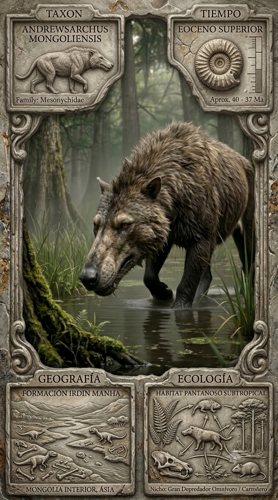
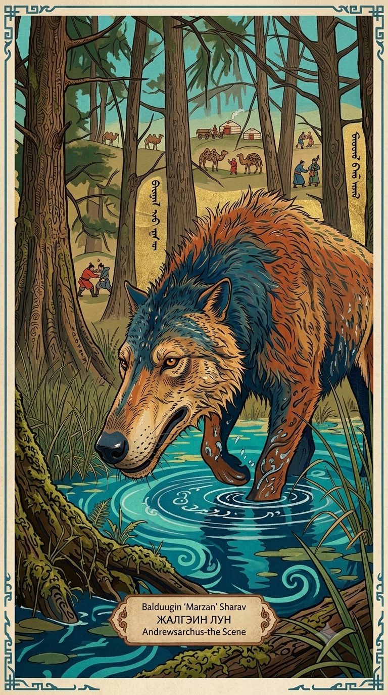
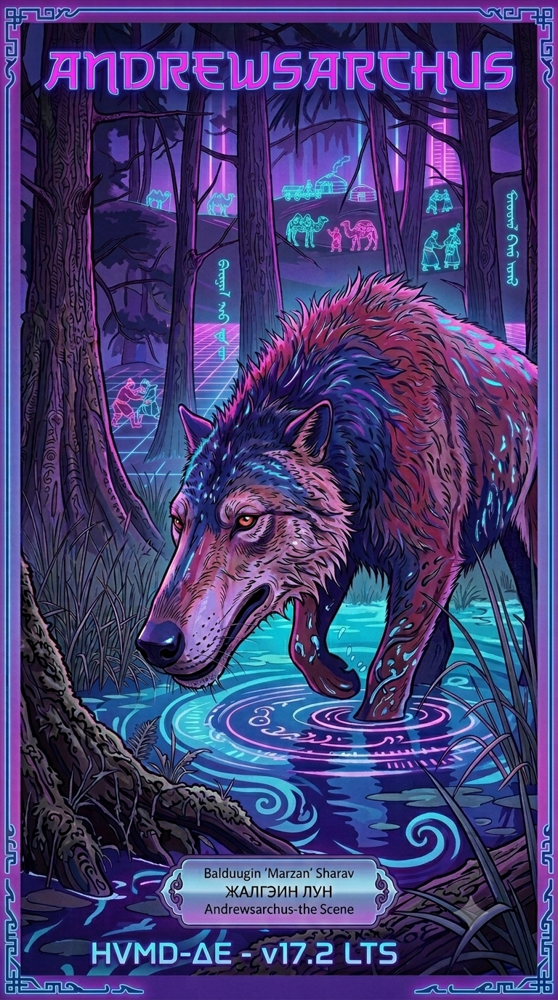

Paleoficha de Andrewsarchus



Periodo: Eoceno Medio
Edad: Hace entre 45 y 40 millones de años.
Dieta: Omnívoro oportunista / carroñero masivo.
Distribución: Formación Irdin Manha, Mongolia (Asia Central).
TAXÓN:
Andrewsarchus mongoliensis
CLADO: Artiodactyla (familia Mesonychidae)
DIETA: Omnívoro oportunista / carroñero masivo
TAMAÑO: Cráneo de ~83 cm; longitud corporal estimada superior a 3,5 metros
LOCOMOCIÓN: Cuadrúpedo plantígrado pesado
TIEMPO:
Eoceno Medio (Lutetiano/Bartoniano), aproximadamente entre 45 y 40 millones de años.
GEOGRAFÍA:
Formación Irdin Manha, Mongolia (Asia Central). Equivalencia paleogeográfica: margen costero y llanuras de sedimentación asiáticas. Ambiente paleoecológico: extensas llanuras aluviales con sistemas fluviales y vegetación subtropical.
ECOLOGÍA:
Flora formada por bosques subtropicales y vegetación de ribera. Fauna asociada con Embolotherium, Metamynodon y diversos reptiles acuáticos. Nicho como gran depredador oportunista o carroñero especializado en grandes cadáveres. Competencia con otros mesoniquios y presión sobre grandes ungulados.
CLIMA:
Wm4 (Tropical). Humedad elevada y temperaturas cálidas constantes.
ESTADO ECOLÓGICO:
Dinámico. Ecosistema altamente productivo capaz de sostener grandes consumidores terrestres.
Vídeo PalEntropía:
▶ Ver Short en YouTube